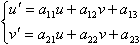

概要
指定された材質番号の UV マッピングに座標変換を施します。
生成規則
texture-transformer ::=
( ShiftTexture = integer, float, float; ) | ( ScaleTexture = integer, float, float, float, float; ) | ( RotateTexture = integer, float, float, float; ) | ( TransformTexture = integer, float, float, float, float, float, float; )
解説
ChangeTexture
UV 座標を平行移動します。材質番号に続けて、移動する u, v 値の順に指定します。
ScaleTexture
UV 座標をスケーリングした後で平行移動します。材質番号に続けて、u, v 方向の倍率、移動する u, v 値の順に指定します。
RotateTexture
UV 座標を指定座標を中心に回転します。材質番号に続けて、反時計回りの回転角度 [deg]、中心 u, v 座標の順に指定します。
TransformTexture
UV 座標に対する一般の 2D アフィン変換です。材質番号に続けて、パラメータ a11, a12, a13, a21, a22, a23 の順に指定します。変換式を以下に示します。

材質番号は、*.x ファイルに定義されている材質を 0 から数えたものです。例えば、3 個目の材質は 2 番になります。1 から数えるのではないので気をつけてください。